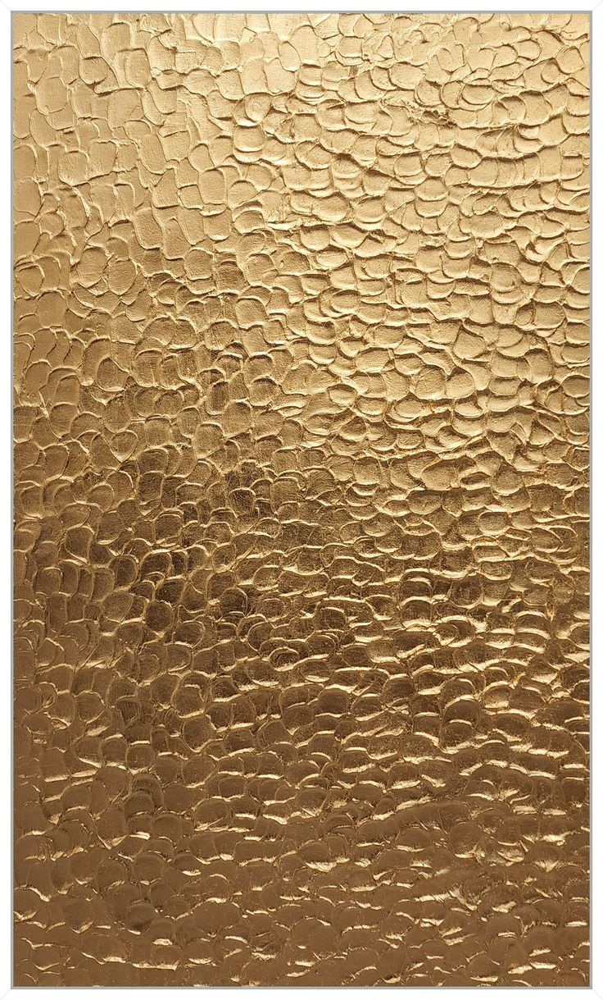
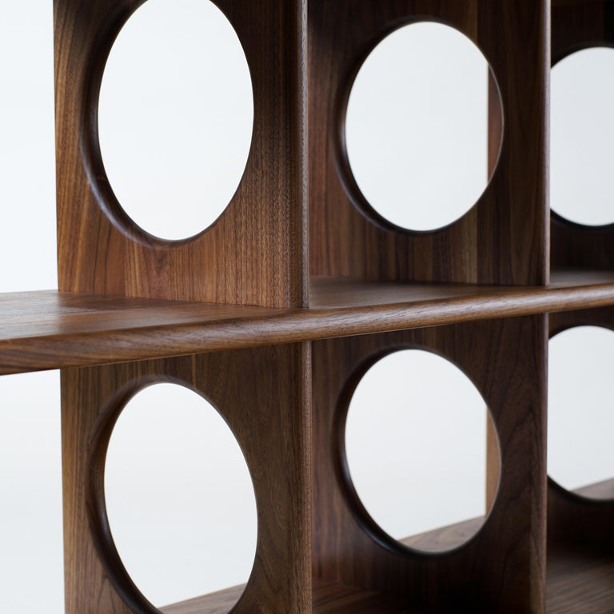
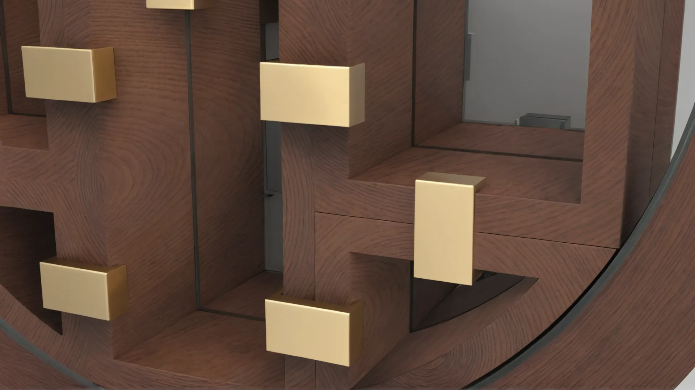
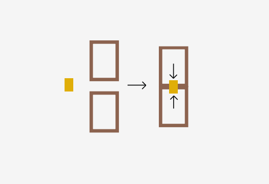
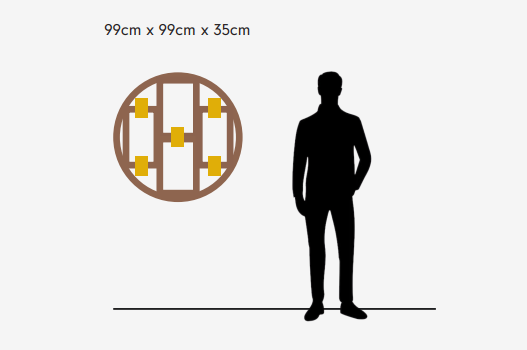
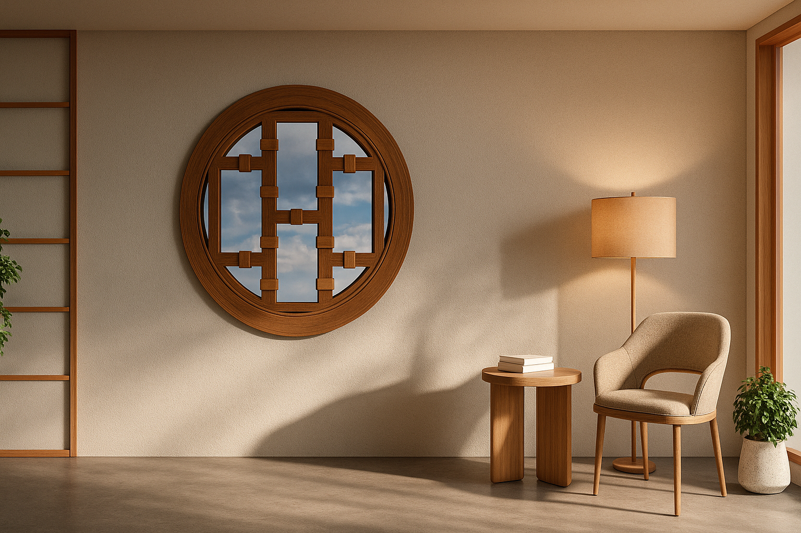

Quimbaya
OPUS está inspirada en la practicidad de la madera y en diferentes elementos para poder exponer piezas de cualquier forma posible manteniendo la intimidad. Sus piezas modulares permiten su manipulación para formar cualquier figura en la ventana y las piezas extras se pueden usar como expositor adicional.
La prioridad, en este caso, fue mantener la privacidad permitiendo la entrada de luz natural. Investigando, se encontró el vidrio PDLC. Este vidrio, con una carga eléctrica, tiene la propiedad de apagarse y encenderse, dando lugar a una mayor o menor opacidad. El diseño es bastante minimalista. Con apliques dorados se le da ese toque que al chef le interesaba. Además, esos apliques ejercen presión entre las piezas, manteniéndolas unidas hasta que fuera necesario moverlas de lugar. Esto permite una estructura robusta y fácil de modificar al momento.



